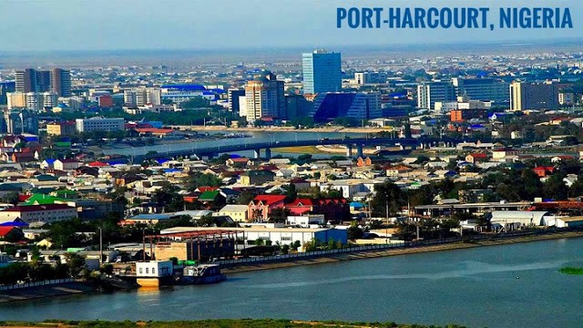

Ifeoluwa Ojelade
About Me
My name is Ojelade Ifeoluwa Olayinka. I was born in Oyo State, Nigeria, and currently live in Port Harcourt. I am a student at BYU-Pathway Worldwide, pursuing a degree in Professional Studies with a focus on developing skills across business and technology. I am passionate about bridging the gap between business and technology by using digital tools, data, and problem-solving skills to improve business processes and create practical solutions. My interests include business analysis, technology, project management, digital transformation and business leadership.
Port Harcourt, Nigeria

Port Harcourt is a major port city in southern Nigeria known for its vibrant energy, rich oil reserves, and significant economic importance as the nation's oil hub.